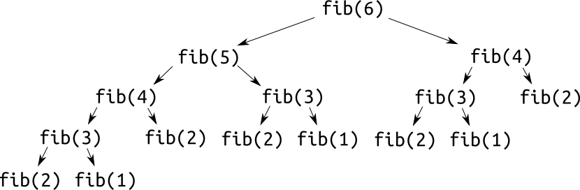
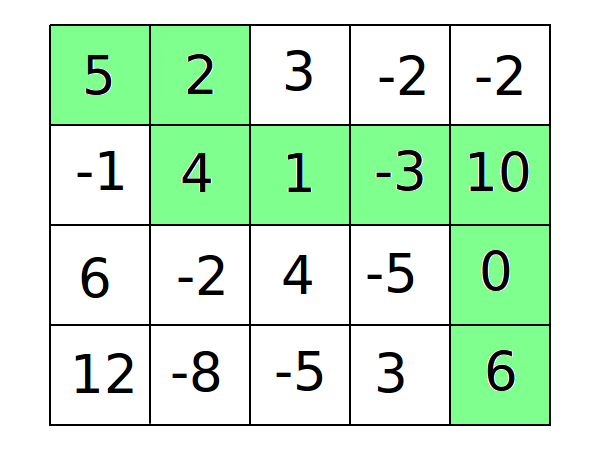

Динамическое программирование на примерах
Определение
Динамическое программирование - очень широкое понятие, под которое подходит множество алгоритмов, которым посвящены отдельные лекции. Формально, динамическое программирование - способ решения задач с помощью разбиения их на подзадачи и комбинирования ответов на них. Впрочем, для абсолютного большинства людей, не сталкивавшихся раньше с ДП, это определение ничего не объясняет. Попробуем изменить его так, чтобы оно стало немного понятнее, но всё ещё подходило под большинство примеров из олимпиадного программирования:
Динамическое программирование - способ решения задачи с помощью выражения ответа в виде функции от ответов на ту же задачу для других входных данных.
Скорее всего, всё ещё непонятно. Гораздо эффективнее будет привести несколько примеров, начиная с самого элементарного.
Связь между ДП и рекурсией.
Последовательность Фибоначчи
Если вы всё же что-то вынесли из приведённого выше определения, то могли заметить, насколько оно похоже на определение рекурсивной функции. На самом деле, ДП - это “всего лишь” способ решения задач на рекурсивные последовательности с сохранением ответа.
Вспомним реализацию расчёта n-го числа Фибоначчи из лекции про рекурсию:
1.int fib(int n) {
2. if (n <= 2) {
3. return 1;
4. }
5. else {
6. return fib(n - 1) + fib(n - 2);
7. }
8.}
Мы отмечали, что она не подходит для использования на практике из-за слишком высокой сложности. Откуда же берётся эта сложность? Просто рассмотрим дерево вызовов функции fib для n=6:

Как видите, для подсчёта fib(6) функцию fib пришлось вызвать 15 раз, хотя логично, что хватило бы шести. Вся проблема заключается в том, что для некоторых x функция fib(x) будет вызываться больше одного раза, и каждый раз высчитываться рекурсивно заново. Очевидно, что для оптимальной работы значения функции нужно сохранять для последующего использования. ДП - один из способов такой оптимизации.
Приведём решение задачи о последовательности Фибоначчи с помощью ДП:
1.#include <bits/stdc++.h>
2.
3.using namespace std;
4.
5.int fib[100001];
6.
7.int main() {
8. int n; //N <= 100000
9. cin >> n;
10.
11. fib[1] = fib[2] = 1; //начальные значения
12.
13. for (int i = 3; i <= n; i++) {
14. fib[i] = fib[i - 1] + fib[i - 2]; //формула перехода
15. }
16.
17. cout << fib[n]; //вычисление ответа
18.}
Идея проста: для вычисления fib(n) нам нужны значения fib(n−1) и fib(n−2). Давайте просто считать fib в порядке возрастания n, сохраняя результаты в массив.
В большинстве случаев ДП характеризуется тремя главными параметрами:
1.Начальные значения. Аналогично крайним случаям в рекурсивных функциях.
2.Формула перехода. Описывает рекурсивную зависимость.
3.Вычисление ответа. В некоторых случаях ответ может быть не последним значением, а суммой или максимумом по значениям.
Путь в матрице
Задачи на поиск оптимального пути в матрице, наверное, самые классические, после задач на последовательность Фибоначчи. В таких задачах каждой клетке в матрице присвоено некоторое число, и нужно найти путь между двумя клетками с максимальной или минимальной суммой.

Приведём решение такой задачи. Будем искать путь между левой верхней и правой нижней клетками с максимальной суммой, если ходить можно только вниз или вправо. Для решения задачи используем следующее ДП: dp[i][j] - максимальная сумма, которую мы можем набрать, дойдя до клетки (i,j). Опишем ДП:
Начальные значения: dp[0][0]=c[0][0] (c - исходная матрица).
Мы находимся в клетке (0,0), значит мы ещё не двигались, то есть собранная нами сумма равна значению в этой клетке.
Формула перехода: dp[i][j]=max(dp[i−1][j],dp[i][j−1])+c[i][j]
Мы можем перейти в клетку (i,j) либо сверху, либо слева. Выгоднее перейти из той, в которую мы до этого пришли с большей суммой.
Ответ: dp[n−1][m−1].
Реализация на C++:
1. #include <bits/stdc++.h>
2.
3. using namespace std;
4.
5. int c[1000][1000];
6. int dp[1000][1000];
7.
8. int main() {
9. int n, m;
10. cin >> n >> m;
11.
12. for (int i = 0; i < n; i++) {
13. for (int j = 0; j < m; j++) {
14. cin >> c[i][j];
15. }
16. }
17.
18. dp[0][0] = c[0][0];
19.
20. for (int i = 0; i < n; i++) {
21. for (int j = 0; j < m; j++) {
22. if (i || j) { //цикл не должен заходить в клетку (0, 0)
23. dp[i][j] = INT_MIN; //код рассчёта максимума получился
24. //достаточно длинным из-за дополнительных
25. //проверок на выход за границы матрицы
26.
27. if (i - 1 >= 0) {
28. dp[i][j] = max(dp[i][j], dp[i - 1][j] + c[i][j]);
29. }
30.
31. if (j - 1 >= 0) {
32. dp[i][j] = max(dp[i][j], dp[i][j - 1] + c[i][j]);
33. }
34. }
35. }
36. }
37.
38. cout << dp[n - 1][m - 1];
39. }
При реализации ДП всегда нужно быть уверенным, что все значения, необходимые для вычисления текущего, уже были вычислены.
Основные элементы комбинаторики
Комбинаторика
Комбинаторика, как можно судить по названию, - раздел математики, изучающий различные комбинации объектов и множеств. Комбинаторика очень тесно связана с информатикой, и часто встречается в олимпиадных задачах. Она включает в себя множество понятий, но в программировании чаще всего используются две из них:
Перестановки
Когда две последовательности состоят из одинаковых объектов, расположенных в разном порядке, они называются перестановками одной и той же последовательности. Например, для последовательности 1,2,3 существует 6 перестановок:
● 1,2,3.
● 1,3,2.
● 2,1,3.
● 2,3,1.
● 3,1,2.
● 3,2,1.
Рассчитать число существующих перестановок достаточно просто. На первое место может стать один из N элементов. На второе место - один из N−1 оставшихся. На третье N−2, и так далее. На последнее место может стать только один элемент, нигде до этого не использовавшийся. Значит, количество перестановок последовательности длиной N равно
Факториал, по определению, и является количеством перестановок последовательности длиной N.
Сочетания
Сочетанием из n по k называется любой набор из n элементов, выбранных из данных k элементов. Например, рассмотрим множество 1,2,3,4. Существует 6 сочетаний по 2 из этого множества:
● 1,2
● 1,3
● 1,4
● 2,3
● 2,4
● 3,4
Число возможных сочетаний из n по k обозначается
и вычисляется по формуле
Число сочетаний очень часто встречается в задачах по программированию. Существуют два способа его вычисления:
Наивный способ
Используется в случаях, когда нужно посчитать небольшое количество за каждое. Реализация на C++:
1.long long fact(int x) { //Факторизация числа
2. long long result = 1;
3. for (int i = 2;i <= x;i++){
6. result *= i;
7. }
8. return result;
9.}
10.long long combinations(int n, int k){
11. return fact(n) / fact(k) / fact(n - k);
12.}
Разумеется, область применения такого подхода сильно ограничена вместимостью типа long long
При помощи динамического программирования
Выразим
рекурсивно. Рассмотрим последний (n-ый) элемент: все сочетания можно разделить на две группы: те которые включают его, и те которые не включают. Заметим, что все сочетания первой группы содержат k−1 элементов из первых n−1, а все сочетания второй группы: k из первых n−1. Значит,
Таким образом мы можем рассчитать значения
для всех n≤N и k≤K за .
Реализация на С++ (значения в поле по модулю
):
1.#include <bits/stdc++.h>
2.using namespace std;
3.const long long MOD = 1e9 + 7;
4.long long c[1001][1001];
5.int main() {
6. c[1][1] = 1;
7. for (int n = 2; n <= 1000; n++) {
8. c[n][1] = n;
9. for (int k = 2; k <= n; k++) {
10. c[n][k] = (c[n - 1][k] + c[n - 1][k - 1]) % MOD;
11. }
12. }
13. //Можем использовать c...
14.}